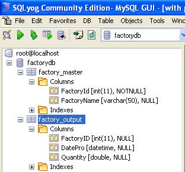
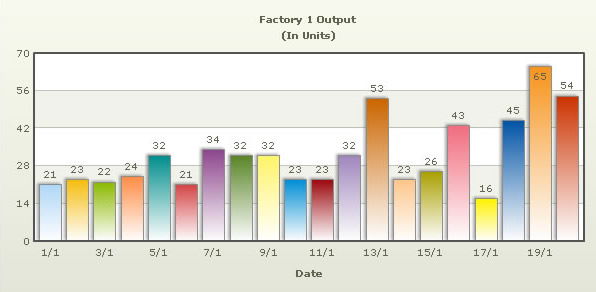

| Creating Drill-down charts |
In our previous example, we had used FusionCharts XT to plot a chart using data stored in database. We will now extend that example itself to create a drill-down chart which can show more information. If you recall from previous example, we were showing the sum of factory output in a pie chart as below:  In this example, we will extend the previous example, so that when users click a pie slice for a factory, they can drill down to see date wise production for that factory. |
| Setting up the pie chart for Link |
|
To set up the pie chart to enable links for drill-down involves just minor tweaking of our previous example. We basically need to add the link attribute for each <set> element. Controller: Fusioncharts::DbExampleController Action: default #This action retrieves the factory data, sets the default value #of @animate_chart to 1 if ":animate" is not present in the request. #The view for this action default.html.erb will use the array values to construct the #xml for this chart. To build the xml, the view takes help from #the builder file (default_factories_quantity.builder) def default response.content_type = Mime::HTML @animate_chart = params[:animate] if @animate_chart.nil? or @animate_chart.empty? @animate_chart = '1' end #Get data from factory masters table @factories = Fusioncharts::FactoryMaster.find(:all) end View: <% @page_title=" FusionCharts XT - Database and Drill-Down Example " %> <% @page_heading=" FusionCharts XT Database and Drill-Down Example " %> <% @page_subheading="Click on any pie slice to see detailed data." %> <p class='text'>Or, right click on any pie to enable slicing or rotation mode.</p> <% # The XML is obtained as a string from builder template. str_xml = render :file=>"fusioncharts/db_example/default_factories_quantity", :locals=>{:factories => @factories,:animate_chart=>@animate_chart} #Create the chart - Pie 3D Chart with data from strXML render_chart '/FusionCharts/Pie3D.swf','', str_xml, 'FactorySum', 600, 300, false, false do-%> <% end-%> This action expects a parameter called "animate" from the request. This is assigned to the variable @animate_chart. The controller finds the data and stores it in @factories. The view is similar to the basic_dbexample.html.erb seen in the previous example, except here it passes the parameter animate_chart also in the locals hash. Here the builder template used is default_factories_quantity.builder and we pass the factories' data and animate_chart parameters to the builder. The builder template used is as follows: #Creates xml with values for Factory Output #along with their names and a link to detailed action for each factory. #It uses the factories parameter from locals hash. #This data is used for building xml for chart with factory name and total output. #Constructs the data URL for the chart which will come up on clicking on the pie slice. xml = Builder::XmlMarkup.new xml.chart(:caption=>'Factory Output report', :subCaption=>'By Quantity', :pieSliceDepth=>'30', :showBorder=>'1', :formatNumberScale=>'0', :numberSuffix=>' Units', :animation=>animate_chart ) do factories.each do |factory| str_data_url = "/Fusioncharts/db_example/detailed/"+factory.id.to_s xml.set(:label=>factory.name,:value=>factory.total_quantity,:link=>str_data_url) end end Iterate through each factory and use the name and total quantity values. We add an attribute called link to the <set> tag, with value as str_data_url. This link str_data_url is the path to the detailed action with id of the factory. On clicking a pie slice, what happens? It goes to the detailed action of the Controller. Let us now generate the chart that will be shown on clicking a pie slice. |
| Creating the detailed data chart page |
Controller: Fusioncharts::DbExampleController Action: detailed #This action retrieves the factory data for the given "id" parameter #The view for this action is detailed.html.erb and it uses the builder file #factory_details.builder to build the xml for the column chart. def detailed response.content_type = Mime::HTML @factory_id = params[:id] factory = Fusioncharts::FactoryMaster.find(@factory_id) @factory_output_quantities = factory.factory_output_quantities end View: <% @page_title=" FusionCharts XT - Database and Drill-Down Example " %> <% @page_heading=" FusionCharts XT Database and Drill-Down Example " %> <% @page_subheading="Detailed report for the factory" %> <% #This page is invoked from default action in controller. #When the user clicks a pie #slice rendered by default.html.erb, the factoryId #is passed as a parameter to detailed function #in the controller. We need to get that factory id, #get the information from database and then show #a detailed chart. # The xml is obtained as a string from builder template. str_xml = render :file=>"fusioncharts/db_example/factory_details", :locals=>{:factory_output=>@factory_output_quantities,:factory_id=>@factory_id} #Create the chart - Column 2D Chart with data from strXML render_chart '/FusionCharts/Column2D.swf', '', str_xml, 'FactoryDetailed', 600, 300, false, false do -%> <% end-%> <BR> <a href='/fusioncharts/db_example/default?animate=0'>Back to Summary</a> <BR> The detailed action does the following:
The view detailed.html.erb calls the render function with the path to the builder factory_details, factory_output and factory ID as parameter. The resultant XML is assigned to the variable str_xml. Finally, it calls the render_chart() function to chart a Column2D chart and passes the xml to it as dataXML parameter. What does the builder template factory_details do? Here is the code: #Creates xml with values for date of production and quantity for a particular factory
#It uses the factory_output parameter from locals hash.
#This data is used for building xml for chart with date of production and output quantity.
xml = Builder::XmlMarkup.new
xml.chart(:palette=>'2', :caption=>'Factory' + factory_id.to_s + ' Output ',
:subcaption=>'(In Units)', :xAxisName=>'Date', :showValues=>'1', :labelStep=>'2') do
factory_output.each do |output|
xml.set(:label=>output.formatted_date,:value=>output.quantity)
end
end
This is a simple xml with the outer <chart> element and <set> elements within it. The <set> element has label and value attributes. Date of production is set as the label and quantity is set as the value. These values are obtained from the array of hashes factory_data received as parameter. Following code for formatting date to dd/mm and removing the leading zeroes is present in Fusioncharts::FactoryOutputQuantity model. Fusioncharts::FactoryOutputQuantity
# Formats the date to dd/mm without leading zeroes
def formatted_date
date_num= date_pro.strftime('%d').to_i
month_num = date_pro.strftime('%m').to_i
result_date=date_num.to_s+"/"+month_num.to_s
return result_date
end
Now, when you click a pie slice, the page opens the following chart with details of the selected factory:  |